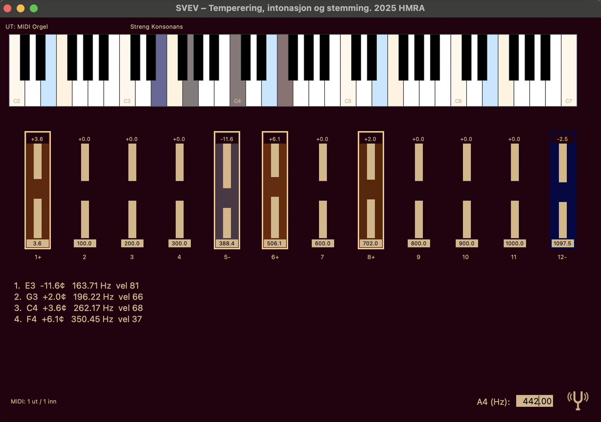
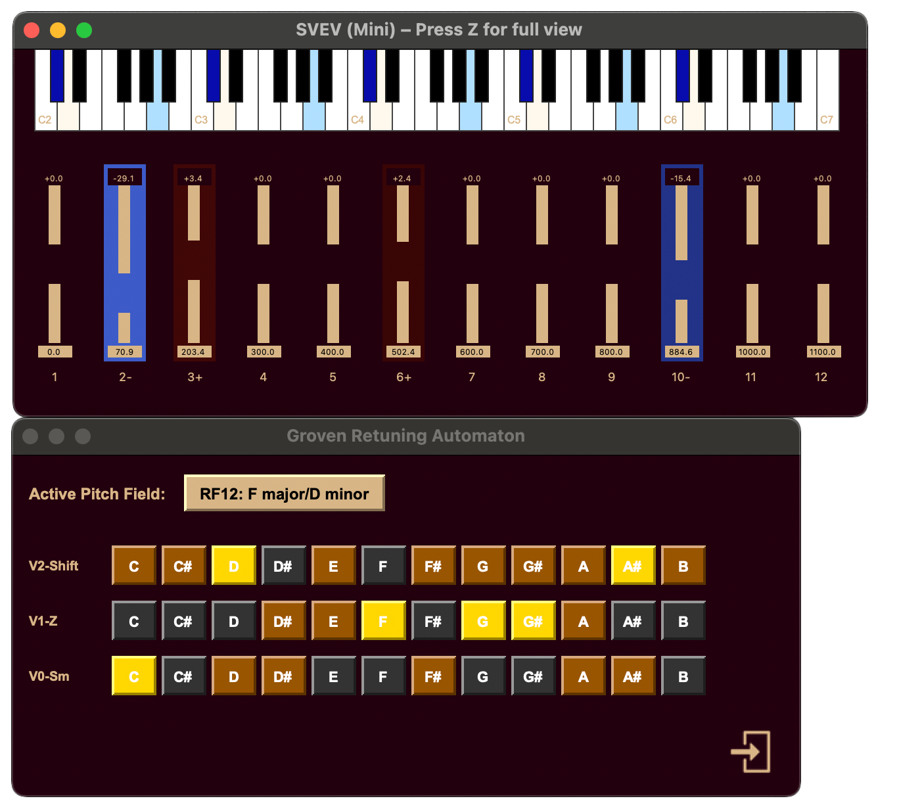

Om Svev
Utforsk harmonisk fridom med presis mikrotuning i sanntid.
Svev er ein sanntidsapplikasjon for dynamisk mikrotuning basert på MIDI Polyphonic Expression (MPE). Programmet fungerer som ein MIDI‑prosessor som tek imot signal frå til dømes eit klaviatur, justerer intonasjonen i sanntid etter vala du gjer i appen, og sender det justerte signalet vidare til lydproduserande programvare. Kvar tone kan justerast individuelt, og du kan velje mellom auto‑tuning‑modusar, historiske tempereringar eller eigendefinerte stemmesystem. For at mikrotuninga skal fungere som tiltenkt, må mottakarsystemet støtte MPE‑formatet (innført i 2018). Fleire DAW‑ar, som Logic og Ableton Live, har innebygde instrument som støttar dette, i tillegg til ei rekkje nye VST‑synthar.
Bilde frå hovedvindu
Bruksområde
- Utøvarar: Svev fungerer som eit hørselsutviklande reiskap ...
- Komponistar: Opnar for komposisjon i fleksible og levande tonesystem ...
- Pedagogar: Gjer undervisning i intonasjon og akustikk konkret og interaktiv ...
- Forskarar: Eit elastisk og presist verktøy ...
- Institusjonar: Tverrfagleg læringsverktøy ...
Funksjonar og verktøy
Grunnleggjande funksjonar
- Appen har visning på nynorsk og engelsk, med valfritt språk i innstillingar
- Full støtte for MIDI Polyphonic Expression (MPE) for individuell justering av kvar tone
- Auto-tuning-modusar: Groven Auto-Tuning og Konsonans, begge basert på sanntids harmonisk analyse
- Støtte for over 100 historiske, sjangerspesifikke tempereringar
- Støtte for å arbeide med eigendefinerte tempereringar
- Flux-system som jamnar ut overgongar mellom intonasjonsmål for naturlege klangskift
Verktøy for styring og tilpassing
- System for å tilordne hurtigtastar til eigne intonasjonsoppsett via MIDI-kontroller
- Presist stemmeapparat for stemming av instrument etter vald kammertone, temperering og frekvens
- Grafisk analysator som lyttar til tonehøgder frå ein vald mikrofon og framstiller dei opp mot vald temperering
- To analysemetodar for å definere tempereringar basert på anten lydfiler eller tonehøgder registrerte via mikrofon, og importere desse til tempereringssystemet
- Preset-system for lagring og gjenbruk av eigne tempereringar, tonika og innstillingar
Analyse og visualisering
- Tuner-vindauge som viser avvik i cent og sanntids klangkurve
- Tone-trace-graf som visualiserer variasjonar i pitch over tid
- Frekvensanalyse som kan nyttast for forsking og undervisning i klang og intonasjon
Integrasjon og arbeidsflyt
- Installerast som frittståande program og nyttast som mellomledd mellom MIDI-kjelde og DAW, VST synth og/eller hardware synth
- MPE-utsending påkrevd til mjukvaresynthar, VST-instrument og eksterne einingar med MPE støtte
- Universell MIDI-filtermodus (utan krav til plugin-format)
- Støtte for eksterne lydkort og mikrofonar
Bilde frå tuner
Bilde frå Groven-modus
Auto-temperering
Med appen følgjer det 3 ulike auto-tempereringsmodusar. Grovens Renstemmings automaton, basert på komponist Eivind Groven sitt arbeid med renstemming. Samt Mild og Streng konsonans, som er appens utviklar Hans Martin Rundberg Austestad sine eigne algoritmar for fleksibel auto-temperering.
Svev er utvikla av musikar og musikkpedagog Hans Martin Rundberg Austestad (2025). Programmet gjev musikarar, komponistar og forskarar eit presist og intuitivt reiskap for å utforske harmoniske kontekstar og stemmingar – frå reint naturtonebasert til historisk temperert og vidare til fritt eksperimentell intonasjon.
About Svev
Explore harmonic freedom with precise microtuning in real-time.
Svev is a real‑time application for dynamic microtuning based on MIDI Polyphonic Expression (MPE). The program functions as a MIDI processor that receives signals from, for example, a keyboard, adjusts the intonation in real‑time according to your choices in the app, and sends the adjusted signal to sound‑producing software. Each note can be adjusted individually, and you can choose between auto‑tuning modes, historical temperaments, or custom tuning systems. For microtuning to work as intended, the receiver system must support the MPE format (introduced in 2018). Several DAWs, such as Logic and Ableton Live, have built‑in instruments that support this, in addition to a range of new VST synthesizers.
Image from main window
Applications
- Performers: Svev functions as an ear‑training tool ...
- Composers: Opens up composition in flexible and living tuning systems ...
- Educators: Makes teaching intonation and acoustics concrete and interactive ...
- Researchers: A flexible and precise tool ...
- Institutions: Interdisciplinary learning tool ...
Features and Tools
Core Features
- The app has interface in Norwegian Nynorsk and English, with language selection in settings
- Full support for MIDI Polyphonic Expression (MPE) for individual adjustment of each note
- Auto-tuning modes: Groven Auto-Tuning and Consonance, both based on real-time harmonic analysis
- Support for over 100 historical, genre-specific temperaments
- Support for working with custom-defined temperaments
- Flux system that smooths transitions between intonation targets for natural timbre shifts
Control and Customization Tools
- System for assigning hotkeys to custom intonation setups via MIDI controller
- Precise tuner for tuning instruments to selected concert pitch, temperament, and frequency
- Graphical analyzer that listens to pitches from a selected microphone and displays them against the selected temperament
- Two analysis methods for defining temperaments based on either audio files or pitches recorded via microphone, and importing these into the temperament system
- Preset system for saving and reusing custom temperaments, tonics, and settings
Analysis and Visualization
- Tuner window showing deviation in cents and real-time timbre curve
- Tone-trace graph visualizing pitch variations over time
- Frequency analysis that can be used for research and teaching in timbre and intonation
Integration and Workflow
- Installed as standalone program and used as intermediary between MIDI source and DAW, VST synth and/or hardware synth
- MPE output required for software synthesizers, VST instruments, and external units with MPE support
- Universal MIDI filter mode (without plugin format requirement)
- Support for external audio interfaces and microphones
Image from tuner
Image from Groven mode
Auto-tempering
The app includes 3 different auto-tempering modes. 1) Groven's Pure Tuning automaton, based on composer Eivind Groven's work with pure tuning. As well as Mild and Strict consonance, which are the app developer Hans Martin Rundberg Austestad's own algorithms for flexible auto-tempering.
Svev is a living microtuning system developed by musician and music educator Hans Martin Rundberg Austestad (2025). The program gives musicians, composers, and researchers a precise and intuitive tool for exploring how notes actually relate to each other in different harmonic contexts – from purely natural overtone‑based to historically tempered and further to freely experimental intonation.